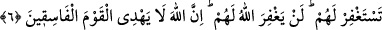
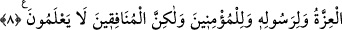

ALLAH MÜNÂFIKLARI
KESİNLİKLE BAĞIŞLAMAYACAKTIR
5. Onlara: Gelin, Allah’ın Peygamberi sizin için mağfiret dilesin, denildiği zaman
başlarını çevirirler ve sen onların, büyüklük taslayarak uzaklaştıklarını görürsün.
6. Onlara mağfiret dilesen de, dilemesen de birdir. Allah onları kesinlikle
bağışlamayacaktır. Çünkü Allah, yoldan çıkmış topluluğu doğru yola iletmez.
7. Onlar: Allah’ın elçisinin yanında bulunanlar için hiçbir şey harcamayın ki
dağılıp gitsinler, diyenlerdir. Oysa göklerin ve yerin hazineleri Allah’ındır. Fakat
münâfıklar bunu anlamazlar.
8. Onlar: Andolsun, eğer Medine’ye dönersek, üstün olan, zayıf olanı oradan
mutlaka çıkaracaktır, diyorlardı. Halbuki asıl üstünlük, ancak Allah’ın,
Peygamberinin ve müminlerindir. Fakat münâfıklar bunu bilmezler.
Münâfıkların cinâyetleri ortaya çıktığında, öğüt yoluyla “Onlara: Gelin, Allah’ın
Peygamberi sizin için mağfiret dilesin, denildiği zaman başlarını çevirirler.”
Meâlim’de gelmiştir ki, bu âyetlerin nüzûlünden sonra İbn Übeyy’in kabilesi ona
dediler ki: “Bu âyetler senin hakkında nâzil oldu, Allah Rasûlü’nün yanına git de senin
için duâ edip mağfiret dilesin.” O münâfık boynunu çevirdi ve şöyle dedi: “Bana îmân
et dediler, ettim. Malımdan zekât vermemi teklif ettiler, verdim. Geriye sadece
Muhammed’e secde etmek kaldı.”
Âyetin anlamı; gelin Rasûlullah (a.s.) sizin için Allah’a duâ etsin ve lütfu ile
günahlarınızı bağışlamasını ve ayıplarınızı örtmesini istesin, demektir.
Kâşânî şöyle demiştir: Onlar karanlık işlere alıştıklarından aydınlığa alışamazlar.
Ona ve insânî olgunluğa karşı arzuları da olmaz. Çünkü zâtî şekilleri değişmiştir.
“Sen onların, büyüklük taslayarak uzaklaştıklarını görürsün.” Şeytanlık duyguları